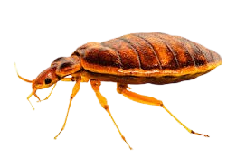

38.
Sobre os percevejos é correto afirmar que:

Um percevejo fêmea em sua vida pode colocar 500 ovos
Ele pode viver até um ano sem comer
Machos também podem botar ovos
Percevejos são resistentes ao ponto de serem considerados imortais
Todos os direitos reservados © Hamilton, Guilherme, Gabriel e Arthur.
 38.
38.
38.
38.